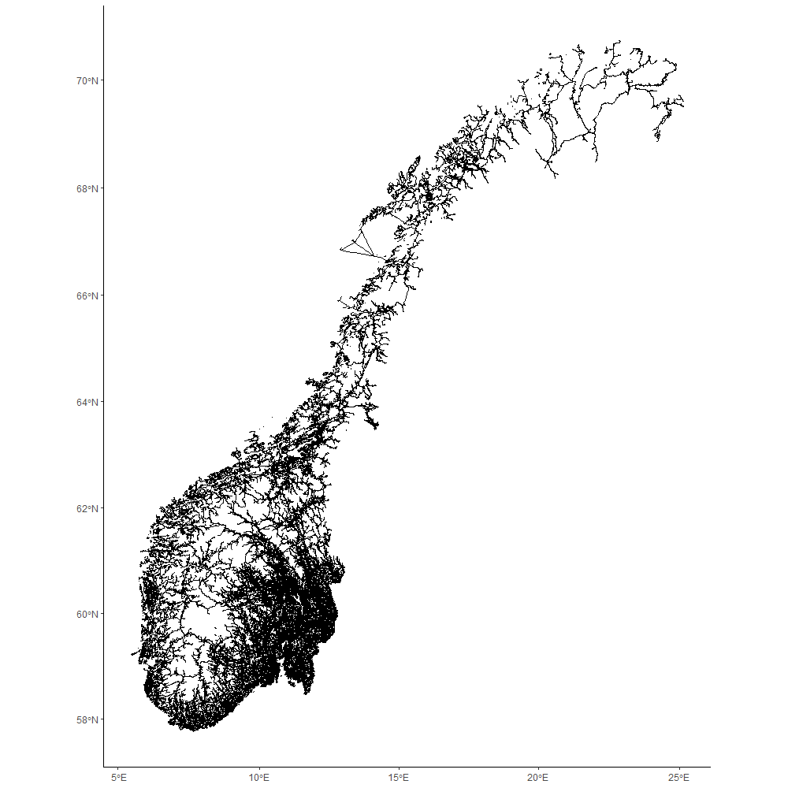

GISSB - Netverksanalyse i R
Sindre Mikael Haugen
2023-01-02
GISSB_vignette.RmdGISSB er en pakke som inneholder GIS-funksjoner i R. I
denne vignetten demonstreres det hvordan GISSB kan brukes til å
gjennomføre nettverksanalyser i R.
Pakken inneholder følgende funksjoner:
address_to_coordscoords_to_googlevegnett_to_Rcoords_to_nodeshortest_path_igraphpath_leafletshortest_path_cppRouting
Ved å bruke disse funksjonene kan man bl.a. finne koordinater til adresser og beregne kjøretid og -avstand mellom disse ved å bruke vegnettet (NVDB Ruteplan nettverksdatasett). Dette kan være nyttig dersom man f.eks. ønsker å analysere regionale forskjeller i befolkningens tilgang til offentlige tjenester.
Se Hvor lang tid tar det å kjøre til nærmeste fødested? for et eksempel der denne pakken har blitt brukt til å lage offisiell statiatikk.
Finne koordinater til adresser (address_to_coords)
Funksjonen address_to_coords bruker Kartverkets adresse-API
for å finne koordinater til adresser. Denne API-en krever nettilgang og
baserer seg på matrikkelen, som er Norges offisielle eiendomsregister og
inneholder alle offisielle adresser med tilhørende koordinater. Ved å
skrive inn postnummer og adresse returneres et sf-objekt
med koordinatene til denne adressen. Dersom det er én eller flere
adresser som ikke finnes i matrikkelen returneres det et datasett med
manglenede verdier for lon/lat for adressene som mangler.
Standardverdi for projeksjonen av koordinatene er satt til CRS 25833. Dette er det offisielle koordinatsystemet i Norge og brukes i de fleste norske kartfiler.
fra <- GISSB::address_to_coords(zip_code = "0177",
address = "Akersveien 26")
fra
#> Simple feature collection with 1 feature and 5 fields
#> Geometry type: POINT
#> Dimension: XY
#> Bounding box: xmin: 262320 ymin: 6650367 xmax: 262320 ymax: 6650367
#> Projected CRS: ETRS89 / UTM zone 33N
#> address zip_code kommunenummer kommunenavn ID geometry
#> 0177 Akersveien 26 0177 0301 OSLO 1 POINT (262320 6650367)
til <- GISSB::address_to_coords(zip_code = "2211",
address = "Otervegen 23")
til
#> Simple feature collection with 1 feature and 5 fields
#> Geometry type: POINT
#> Dimension: XY
#> Bounding box: xmin: 334492 ymin: 6674510 xmax: 334492 ymax: 6674510
#> Projected CRS: ETRS89 / UTM zone 33N
#> address zip_code kommunenummer kommunenavn ID geometry
#> 2211 Otervegen 23 2211 3401 KONGSVINGER 1 POINT (334492 6674510)Det er også mulig å benytte CRS 4326 for å plassere koordinatene på kart med åpen kildekode (som f.eks. Leaflet) eller for å enklere søke opp koordinater i Google Maps. Koordinatsystemet CRS 4326 er derimot ikke metrisk og man kan derfor ikke måle avstander i meter når man bruker dette. Derfor anbefales det kun å bruke CRS 4326 i forbindelse med visualisering.
For å få koordinatene med CRS 4326 må dette spesifiseres i funksjonen
address_to_coords. Det er også mulig å angi en vektor med
flere postnummere og adresser for å få oppgitt koordinatene til flere
adresser:
postnummere = c("0177", "2211")
adresser = c("Akersveien 26", "Otervegen 23")
fra_4326 <- GISSB::address_to_coords(zip_code = postnummere,
address = adresser,
crs_out = 4326)
fra_4326
#> Simple feature collection with 2 features and 5 fields
#> Geometry type: POINT
#> Dimension: XY
#> Bounding box: xmin: 10.74685 ymin: 59.92203 xmax: 12.01638 ymax: 60.17383
#> Geodetic CRS: WGS 84
#> address zip_code kommunenummer kommunenavn ID
#> 0177 Akersveien 26 0177 0301 OSLO 1
#> 2211 Otervegen 23 2211 3401 KONGSVINGER 2
#> geometry
#> 0177 POINT (10.74685 59.92203)
#> 2211 POINT (12.01638 60.17383)Etter å ha omgjort koordinatene til CRS 4326 kan de plasseres på internasjonale kart, her med pakken Leaflet:
leaflet::leaflet(width = "100%") %>%
leaflet::addTiles() %>%
leaflet::addMarkers(data = fra_4326$geometry)Søke opp koordinater i Google Maps
(coords_to_google)
Når man skal kombinere flere kartfiler er det viktig at alle filene
er angitt med samme koordinatsystem. Om man derfor ønsker å beholde
sf-objektet med CRS 25833, men ønsker å legge til en kolonne med
koordinatene i CRS 4326 (som er enklere å klippe og lime inn i Google
Maps) kan man bruke funksjonen coords_to_google. Da legges
det til en kolonne som heter coords_google.
fra <- GISSB::coords_to_google(fra)
fra$coords_google
#> [1] "59.9220274187717, 10.7468516818247"
til <- GISSB::coords_to_google(til)
til$coords_google
#> [1] "60.1738313973094, 12.0163762410388"Databehandling av vegnettet (vegnett_to_R)
For å beregne kjøretid og -avstand mellom ulike koordinater benyttes vegnettet som kan lastes ned fra Geonorge. Når man laster inn vegnettsfilen som et sf-objekt ser den slik ut (OBS: det kan ta opptil 3 minutter å laste inn filen):
vegnett <- sf::read_sf("vegnettRuteplan_FGDB_20210528.gdb", 'ERFKPS')
ggplot2::ggplot() +
ggplot2::geom_sf(data = vegnett)
Vegnettet består av punkter som er plassert ca. 50 meter fra hverandre. Disse punktene kalles for noder. Lenkene som forbinder nodene/punktene sammen heter edges.
For at vegnettet skal kunne brukes til nettverksanalyser i R må
dataene behandles og formatet omgjøres (med funksjoner bl.a. fra pakkene
igraph og cppRouting).
Denne databehandlingen av vegnettet er samlet i funksjonen
vegnett_to_R. Resultatet er en liste med følgende
objekter:
- [1]
graph(tbl_graph) - [2]
nodes(sf) - [3]
edges(data.frame) - [4]
graph_cppRouting_minutes(cppRouting) - [5]
graph_cppRouting_meters(cppRouting)
Objektene nodes og edges benyttes for å
plassere koordinatene til sitt nærmeste punkt i vegnettet med funksjonen
coords_to_node.
Objektet graph benyttes for å beregne korteste
kjøretid/-vei i meter eller minutter med funksjonen
shortest_path_igraph. Denne benyttes også for å vise hvilke
noder i hvilken rekkefølge som utgjør den korteste kjøreruten mellom to
punkter i vegnettet.
Objektet graph_cppRouting_minutes benyttes for å beregne
korteste kjøretid i minutter med funksjonen
shortest_path_cppRouting. Tilsvarende benyttes objektet
graph_cppRouting_meters for å beregne korteste kjøreavstand
i meter.
vegnett_list <- vegnett_to_R(vegnett = vegnett_sampledata,
year = 2021,
fromnodeID = "FROMNODEID",
tonodeID = "TONODEID",
FT_minutes = "FT_MINUTES",
TF_minutes = "TF_MINUTES",
meters = "SHAPE_LENGTH")
graph <- vegnett_list[[1]]
nodes <- vegnett_list[[2]]
edges <- vegnett_list[[3]]
graph_cppRouting_minutes <- vegnett_list[[4]]
graph_cppRouting_meters <- vegnett_list[[5]]Merk at vegnettsfilene fra Geonorge endret struktur og kolonnenavn i
2022. Standardverdiene for funksjonen vegnett_to_R er
gyldige for den nye strukturen, mens for vegnett fra 2021 og tidligere
må følgende argumenter spesifiseres: year = 2021,
fromnodeID = "FROMNODEID",
tonodeID = "TONODEID",
FT_minutes = "FT_MINUTES",
TF_minutes = "TF_MINUTES" og
meters = "SHAPE_LENGTH".
Det er også mulig å legge til svingrestriksjoner (“turn
restrictions”) i vegnettet. Dette finnes som et separat kartlag i
.gdb-filene man laster ned fra Geonorge. Disse filene inneholder flere
feil (?) og derfor anbefales det ikke å ta disse i bruk (før problemene
har blitt løst). Om man allikevel ønsker å teste med svingrestriksjoner
må man laste inn kartlaget i et objekt som heter
turnrestrictions_geom og sette argumentet
turn_restrictions = TRUE i funksjonen
vegnett_to_R.
Knytte koordinater til vegnettet (coords_to_node)
For å kunne beregne kjøretid/-vei fra et valgt start- og stoppunkt
(uten å vite hvilken node-ID disse har) må man knytte adressene man
ønsker å analysere til deres nærmeste punkt i vegnettet. Dette gjøres
ved å finne hvilken node som er den nærmeste et gitt koordinatpunkt (X
og Y) i vegnettet. Ved å bruke funksjonen knn fra pakken nabor finner man det
nærmeste punktet i meter (målt i luftlinje) fra et gitt koordinatpunkt.
knn = 1 betyr at man kun er interessert i å lokalisere det
nærmeste punktet til koordinatene og dette er satt som standardverdi i
funksjonen coords_to_node. Dersom denne settes til et annet
tall (gjøres ved å endre argumentet knn = X i funksjonen)
finner man det nærmeste punktet (knn = 1), to nærmeste
punktene (knn = 2), tre nærmeste punktene
(knn = 3) osv. Dette kan være nyttig dersom det nærmeste
punktet i vegnettet ikke finner en gyldig rute pga. enveiskjørte veier
eller andre brudd i vegnettet.
I funksjonen coords_to_node legger man inn et sf-objekt
(med CRS 25833) som inneholder koordinatene til ett eller flere punkter.
Resultatet er et objekt der node-ID-en til den nærmeste noden til
koordinatene målt i luftlinje har blitt lagt til
(from_node/to_node). I tillegg viser kolonnen
dist_coord_node_from/dist_coord_node_to hvor
mange meter det er i luftlinje mellom koordinatene og det nærmeste
punktet i vegnettet til hvert koordinatpunkt. Dette kan være nyttig for
å avgjøre om det er enkelte koordinater som har blitt tildelt noder som
er for langt unna den opprinnelige plasseringen (og som man dermed kan
vurdere å utelate fra den videre analysen). Det kan også være lurt å
legge til en ekstra kostnad for avstanden mellom koordinatene til en
adresse og den nærmeste noden i vegnettet. F.eks. kan man regne ut hvor
lang tid det tar å kjøre avstanden i 30 km/t i minutter ved å gange
avstanden i
dist_coord_node_from/dist_coord_node_to med
0,002. Man bør også gange selve avstanden først med et tall høyere enn 1
(f.eks. 1,5) for å kompensere for svinger i veien ettersom det sjelden
er mulig å reise i luftlinje.
For å benytte funksjonen coords_to_node må objektene
nodes og edges (som lages med funksjonen
vegnett_to_R) være lastet inn.
from_node <- GISSB::coords_to_node(coords = fra, direction = "from")
from_node
to_node <- GISSB::coords_to_node(coords = til, direction = "to")
to_nodeVegnettet består av flere mindre deler/vegnett der flere av disse
ikke har noen tilknytning til hverandre. Dersom man har et startpunkt
som tilhører en annen del av vegnettet enn stoppunktet vil det ikke være
mulig å finne en gyldig rute mellom disse. Ved å legge til argumentet
membership = TRUE begrenses listen over hvilke noder man
leter etter til å kun gjelde noder som er tilknyttet samme del av
vegnettet som enten start- eller stoppnoden. Dette kan bare gjøres for
enten “from” eller “to” og koden som har angitt argumentet
membership = FALSE må kjøres før koden som har
membership = TRUE:
from_node <- GISSB::coords_to_node(coords = fra, direction = "from", membership = FALSE)
to_node <- GISSB::coords_to_node(coords = til, direction = "to", membership = TRUE)Beregne korteste kjøretid og -avstand med tidygraph
(shortest_path_igraph)
Når man har en node-ID for både et start- og stoppunkt kan man
benytte funksjonen shortest_path_igraph for å beregne den
korteste kjøreavstanden mellom disse. For å beregne korteste kjøretid i
minutter angis argumentet unit = "minutes" (standardverdi),
mens unit = "meters" beregner korteste kjøreavstand i
meter.
For å kjøre koden må objektet graph (som lages med
funksjonen vegnett_to_R) være lastet inn.
OBS: shortest_path_igraph fungerer ikke med vektorer,
dvs. en liste over flere fra- eller til-noder. Med
shortest_path_igraph er det altså kun mulig å beregne
avstander én til én. For å beregne avstand med flere fra- og/eller
til-noder brukes funksjonen shortest_path_cppRouting (se
nedenfor).
avstand_min <- GISSB::shortest_path_igraph(from_node_ID = from_node$from_node,
to_node_ID = to_node$to_node,
unit = "minutes",
path = F)
paste0(round(avstand_min$length, digits = 1), " minutter / ",
substr(avstand_min$length/60, 1, 1),
" timer og ",
round(avstand_min$length, digits = 0)-as.numeric(substr(avstand_min$length/60, 1, 1))*60, " minutter")
avstand_meter <- GISSB::shortest_path_igraph(from_node_ID = from_node$from_node,
to_node_ID = to_node$to_node,
unit = "meters",
path = F)
paste0(round(avstand_meter$length, digits = 1), " meter / ",
round(avstand_meter$length/1000, digits = 1), " km."
)For å få oppgitt hvilke noder i hvilken rekkefølge som utgjør den
korteste ruten mellom start- og stoppunktet legges argumentet
path = TRUE til:
path <- GISSB::shortest_path_igraph(from_node_ID = from_node$from_node,
to_node_ID = to_node$to_node,
unit = "minutes",
path = TRUE)
path$epathDet er mulig å visualisere kjøreruter laget med funksjonen
shortest_path_igraph (der path = TRUE) ved å
bruke funksjonen path_leaflet:
GISSB::path_leaflet(path)Beregne korteste kjøretid og -avstand med cppRouting
(shortest_path_cppRouting)
Det er mulig å bruke funksjonen shortest_path_igraph til
å beregne kjøretid/-vei, men dette kan ta veldig lang tid dersom man
skal beregne kjøreruter mellom mange koordinater. Derfor er det best å
heller bruke funksjonen shortest_path_cppRouting. Denne
funksjonen bruker pakken cppRouting
som benytter et annet format på dataene som krever mindre minne og
benytter parallellprosessering, noe som gjør at kjøringene går mye
raskere. I tillegg lagres ikke informasjonen om selve ruten, kun
avstanden mellom start- og stoppunktene i minutter eller meter. Dette er
en fordel mtp. på tiden det tar å kjøre koden, men ulempen er at man
ikke får sjekket hvilke veglenker hver rute består av. Dette kan derfor
funksjonen shortest_path_igraph (med
path = TRUE) brukes til dersom man ønsker å kontrollere
eller visualisere kjøreruter mellom ett start- og stoppunkt.
I funksjonen shortest_path_cppRouting kan man legge inn
vektorer med flere noder i både argumentene from_node og
to_node. Det betyr at dersom man legger inn to noder i
from_node og fire noder i to_node beregnes den
korteste kjøreruten fra begge startnodene til alle de fire stoppnodene.
Resultatet blir et objekt med åtte rader. Om man kun er interessert i
den korteste kjøreavstanden fra hver av startnodene til én av
stoppnodene legger man inn argumentet dist = "min" i
funksjonen. Om man derimot vil ha hvilken av stoppnodene som har lengst
kjøreavstand per startnode settes dist = "max".
For å beregne korteste kjøretid i minutter med
shortest_path_cppRouting settes
graph_cppRouting = graph_cppRouting_minutes, mens
graph_cppRouting = graph_cppRouting_meters beregner
korteste kjøreavstand i meter. Objektet/objektene
graph_cppRouting_minutes/graph_cppRouting_meters
må være lastet inn (gjøres med funksjonen vegnett_to_R) før
funksjonen shortest_path_cppRouting kan brukes.
avstand_cpp_min <- GISSB::shortest_path_cppRouting(from_node$from_node,
to_node$to_node,
unit = "minutes",
graph_cppRouting_object = graph_cppRouting_minutes)
avstand_cpp_min
avstand_cpp_meter <- GISSB::shortest_path_cppRouting(from_node$from_node,
to_node$to_node,
unit = "meters",
graph_cppRouting_object = graph_cppRouting_meters)
avstand_cpp_meterEksempel: beregnet kjøretid til nærmeste fødested
I dette eksempelet beregnes korteste og lengste kjøretid fra to adresser (“Akersveien 26, 0177” og “Otervegen 23, 2211”) til syv ulike adresser (fødesteder).
adresser <- c("Sykehusveien 25",
"Sognsvannsveien 20",
"Kirkeveien 166",
"Parkvegen 35",
"Kirkevegen 31",
"Sjukehusveien 9",
"Sogneprest Munthe-Kaas vei 100")
postnummere <- c("1474",
"0372",
"0450",
"2212",
"2413",
"2500",
"1346")
til <- GISSB::address_to_coords(zip_code = postnummere,
address = adresser) %>%
GISSB::coords_to_google()
to_node <- GISSB::coords_to_node(coords = til, direction = "to", membership = F)
to_node
fra <- GISSB::address_to_coords(zip_code = c("0177", "2211"),
address = c("Akersveien 26", "Otervegen 23")) %>%
GISSB::coords_to_google()
from_node <- GISSB::coords_to_node(coords = fra, direction = "from", membership = T)
from_node
avstand_cpp <- GISSB::shortest_path_cppRouting(unique(from_node$from_node),
unique(to_node$to_node),
unit = "minutes")
avstand_cpp
avstand_cpp_min <- GISSB::shortest_path_cppRouting(unique(from_node$from_node),
unique(to_node$to_node),
unit = "minutes",
dist = "min")
avstand_cpp_min
avstand_cpp_max <- GISSB::shortest_path_cppRouting(unique(from_node$from_node),
unique(to_node$to_node),
unit = "minutes",
dist = "max")
avstand_cpp_max